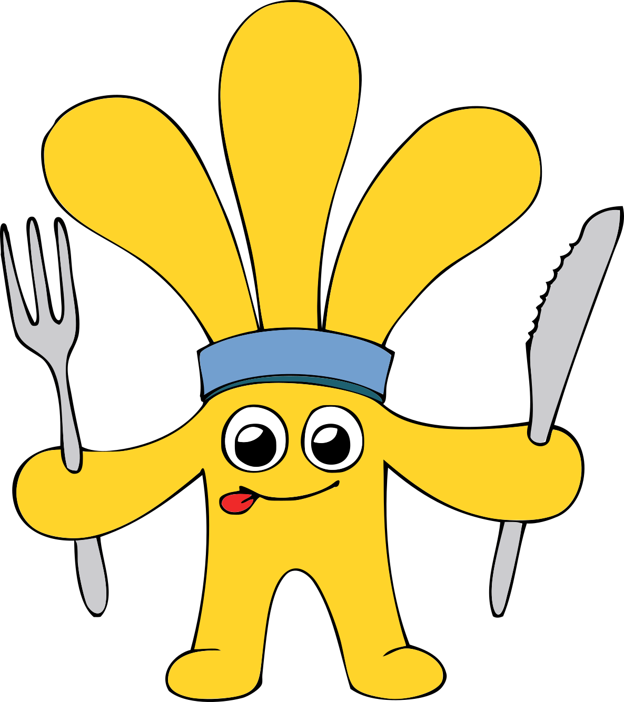

Kdo je Petko?
Osnovna šola Radlje ob Dravi ima svojo maskoto, ki ji je ime Petko. Predstavlja učence šole in njihove aktivnosti v šoli ter zunaj nje.
Petko je zaščitni znak šole in se pojavlja na tekmovanjih, prireditvah ter v različnih predstavitvah.
Kako je nastal?
Maskota je nastala poleti leta 2011 skupaj z novim logotipom šole. Pri njenem nastanku je bila pomembna ideja roke, ki je bila del starega logotipa.
Ime Petko so učenci izbrali z glasovanjem. Med predlogi so bila imena Učko, Petko in Rupet.